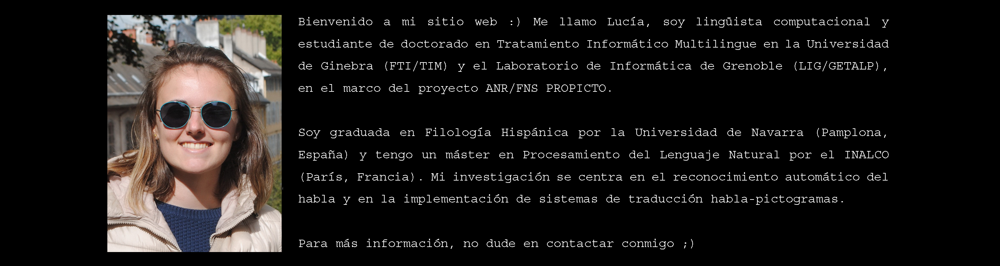
Mi formación académica y profesional
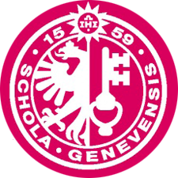
diciembre 2020 – presente
Proyecto de tesis: « Traducción automatizada del habla en francés a secuencias pictográficas: hacia una mejor accesibilidad comunicativa para los pacientes alófonos en contextos sanitarios ».
Como beneficiaria de una beca Candoc, estoy realizando mi doctorado bajo una cotutela entre el Departamento de Tratamiento Informático Multilingüe (TIM) de la Universidad de Ginebra y el Grupo de Investigación en Traducción Automática y Procesamiento Automatizado de las Lenguas y el Habla (GETALP), afiliado al Laboratorio de Informática de Grenoble (LIG). Entre mis principales áreas de investigación se encuentra el reconocimiento automático del habla y la creación de sistemas de traducción habla-pictogramas.
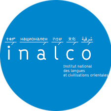
septiembre 2018 – septiembre 2020
Especialización: Investigación & Desarrollo.
Clases cursadas:
« Creación de un sistema robusto de reconocimiento automático del habla aplicado al ámbito médico », [PDF].
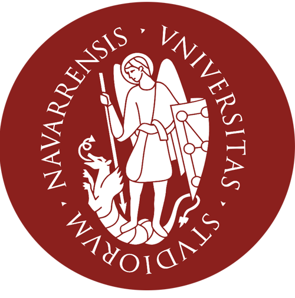
septiembre 2014 - junio 2018
Candidata al Premio Extraordinario de Fin de Grado.
Clases cursadas:
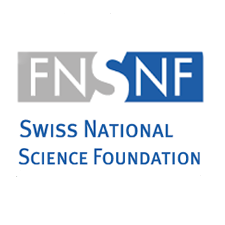
diciembre 2020 – presente
Como doctoranda Candoc, mi trabajo se enmarca en el proyecto bilateral de investigación PROPICTO, financiado por la Agencia Nacional de la Investigación de Francia (ANR) y el Fondo Nacional Suizo para la Investigación Científica (FNS).
El objetivo general de PROPICTO (acrónimo francés de PRojection du langage Oral vers des unités PICTOgraphiques) se centra en la creación de sistemas de traducción del habla en secuencias pictográficas que contribuyan a una mejora en el acceso a la comunicación de pacientes no francófonos en contextos de urgencia hospitalaria.
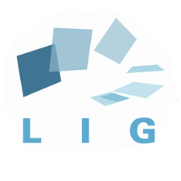
febrero 2020 – septiembre 2020
Participación en el proyecto BabelDr, entre el Laboratorio de Informática de Grenoble y la Universidad de Ginebra. Desarrollo de un sistema de Reconocimiento Automático del Habla (RAH) aplicado al ámbito médico.
Tareas principales:
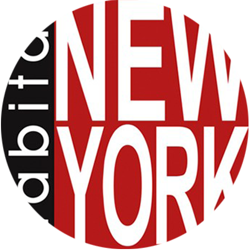
julio 2018 – septiembre 2018
Traducción ING > ESP de textos comerciales: transcripciones de vídeos, artículos de viajes, críticas de apartamentos, recomendaciones de clientes.
septiembre 2016 – junio 2017
Alumna investigadora en el Departamento de Filología.
Tareas principales:
octubre 2020
Curso MOOC de ruso para principiantes (fonética, grafémica, sintaxis).
mayo 2020
Curso MOOC sobre confidencialidad de datos y protección de la privacidad personal.
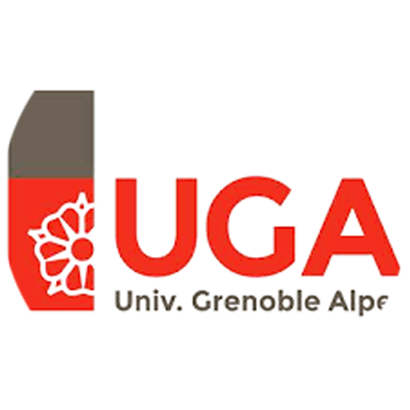
junio 2019
Curso MOOC introductorio de la lingüística de corpus y sus diversas aplicaciones en la lexicología, el análisis del discurso o el procesamiento del lenguaje natural.
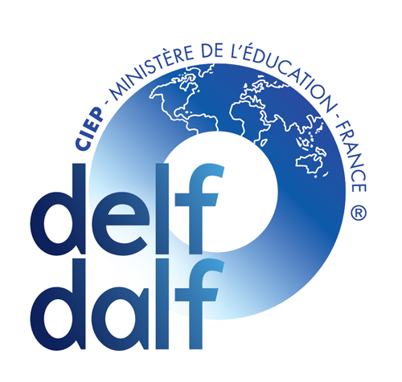
junio 2018
Gran dominio del francés oral y escrito.
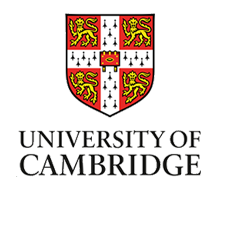
junio 2017
Gran dominio del inglés oral y escrito.
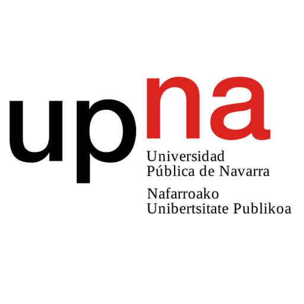
octubre 2013
Para saber más, pulse aquí.